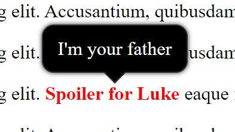

Домашка от 2019.09.20
В исходниках примеры в папке ./examples с последнего занятия
- Пройти тест по HTML5/CSS3 → читаем теорию по неотвеченным вопросам
-
Что почитать по верстке?
-
Практика
-
Сделать тултип на чистом css. Да, всего одно задание. Да, для него надо знать очень
много
теории.
Что понадобится
display: noneдля сокрытия тултипа-
псевдокласс
:hoverдля отменыdisplay: noneпри наведении - позиционирование через
position: absoluteиtransform: translate - Немного CSS3 через
border-radiusиbox-shadow - сделать треугольник под тултипом.
Для этого понадобится
псевдоэлемент
:after. В остальном, его также позиционируем, как описано ранее. Это обычный квадратный блок, который повернут на 45 градусов черезtransofrm: rotate
-
Сделать тултип на чистом css. Да, всего одно задание. Да, для него надо знать очень
много
теории.
-
Дополнительно